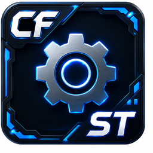

Small utilities
A handful of one-off tools under Utilities in the main menu that don't warrant their own doc page — listed here for completeness.
cmdsFieldReporter (Log)
menu_tools/Utilities/cmdsFieldReporter.py — opens a
dockable workspaceControl titled "Log" hosting Maya's own
native cmdScrollFieldReporter (a Script-Editor-style
command/output log widget), plus a custom toolbar: Clear, an "Echo All"
toggle, Search Docs / Python Docs buttons, an inline module-search field
with autocomplete, a "main()" checkbox, a file-browse button, and an
Execute button that can import and run an arbitrary Python module file
found on disk (optionally calling its main()). Adds a custom
right-click menu (Copy / Search Docs / Python Docs / Clear) to the
reporter itself, and persists last-search-text and the "execute main()"
checkbox to the Windows registry independently of CoreTools' own
UserConfig store.
uiScript to a stale
dotted import path left over from before this module's current
location under CoreTools — fixed now, but a workspaceControl
saved to a UI layout from before the fix can still carry the old
string, and Maya will silently fail to re-import it on restore.
Deleting and relaunching the control clears it.
Outliner
menu_tools/Utilities/Outliner.py — a plain, minimal
secondary Maya window containing an outlinerPanel/outlinerEditor
configured to hide shapes, attributes, and connections, showing only the
DAG hierarchy. No custom logic beyond native Maya UI commands — a
lightweight second Outliner, nothing more.
Toggle Y/Z Up Axis
menu_tools/Utilities/Toggle_Y_Z_UpAxis.py — a one-shot
action with no window. Flips Maya's current up-axis (Y-up <-> Z-up)
and, either direction, resets the top/front/side/persp
camera rotations to canonical orientations, recenters the persp camera's
pivot to the origin, and frames all views. It's a toggle, not a picker
— running it just flips whichever axis is currently active. The
actual axis-flip logic lives outside CoreTools proper (a shared utility
module the launcher imports and calls), so this launcher itself is a
thin shim around that external function, not a self-contained
implementation.

Settingsmenu_tools/Utilities/Settings.py — a pure shim:
main() just calls
CoreTools.dcc.maya.dialogs.settings.show(). See
Settings dialog +
registry for the real Settings dialog documentation.